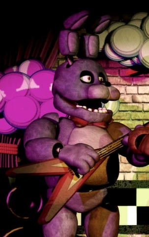

Aparência

Bonnie é um animatrônico coelho de olhos marrons que possui orelhas articuladas que podem dobrar para frente, e usa uma gravata borboleta vermelha. No Palco, ele segura uma guitarra vermelha.